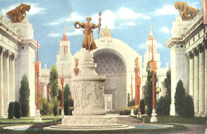

|  |
|
Evelyn Beatrice Longman, Fountain of Ceres. Court of
the Four Seasons, Panama-Pacific International Exposition,
San Francisco, 1915. From: Colortypes of the Panama-Pacific
International Exposition at San Francisco, 1915 (San Francisco:
Robert A. Reid, 1915).
|